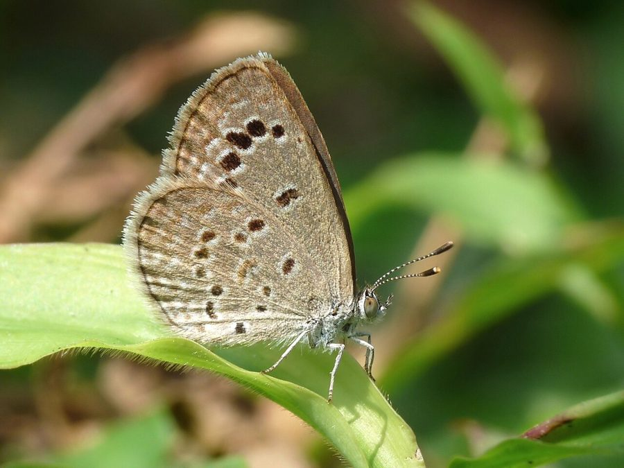

छोटी नीली तितलीLesser Grass Blue
Zizina otis · Lycaenidae · INS-0024

- Scientific name
- Zizina otis (Fabricius, 1787)
- Family
- Lycaenidae
- Hindi
- छोटी नीली तितली
- Status here
- native
- IUCN
- not evaluated
When to look कब देखें
Present all year.
छोटी नीली तितली / Lesser Grass Blue
Zizina otis (Fabricius, 1787) — Lycaenidae
छोटी नीली तितली (लेसर ग्रास ब्लू) — पूर्वी उत्तर प्रदेश के मैदानों, बगीचों की घास और खेतों के किनारे पाई जाने वाली भारत की सबसे छोटी तितलियों में से एक निवासी जीव है। इसका पंख-फैलाव (wingspan) केवल 2 सेंटीमीटर के आसपास होता है। नर तितली के पंखों का ऊपरी हिस्सा हल्का चमकीला नीला (pale violet-blue) होता है, जिसके किनारे काले होते हैं, जबकि मादा तितली पूरी तरह से भूरे रंग की होती है। पंखों का निचला हिस्सा (underside) हल्का धूसर-सफ़ेद होता है, जिस पर छोटे काले रंग के बिंदु बने होते हैं जो इसे घास में छिपने में मदद करते हैं। यह तितली बहुत ही धीमी और ज़मीन के बिल्कुल पास (very low flight) उड़ती है, अक्सर घास की पत्तियों के ऊपर तैरती हुई दिखती है। इसके छोटे कैटरपिलर जंगली मटर और तिपतिया घास पर पलते हैं।
Quick Identification त्वरित पहचान
| Feature | Description |
|---|---|
| Size | One of the smallest butterflies in UP (wingspan 18–24 mm) |
| Male Upperside | Pale violet-blue with a broad, dark brownish-black margin |
| Female Upperside | Uniformly dark brown or dull brown; lacks blue coloration |
| Underside | Light greyish-white or pale buff with a series of small, brown-ringed black spots |
| Flight | Very weak, slow, fluttering flight; stays within 10–20 cm of the grass canopy |
Field tip: Sit quietly near a grassy lawn or path. Look closely for tiny, blue or brown dots fluttering weakly just above the clover or grass tips. When it lands, it rubbing its hindwings together.
Morphology आकारिकी
Biometrics (typical measurements for adult specimens in local lawns):
| Measurement | Range |
|---|---|
| Forewing length | 8–12 mm |
| Wingspan | 18–24 mm |
Wing details: The upperside of the male is pale violet-blue, with a relatively broad, diffuse dark brown border along the outer margins. The female is uniformly dark brown, occasionally showing a slight blue dusting at the wing bases. The underside of both sexes is pale greyish-white, featuring a row of small, black, white-ringed post-discal spots. The hindwing underside has a characteristic spot pattern: the spot in space 6 is shifted inwards toward the base, a diagnostic feature of the genus.
Behaviour & Ecology व्यवहार और पारिस्थितिकी
Grass-dweller and wing-rubber.
- Low-canopy flight: Fly very close to the soil surface, rarely rising above 30 cm. This weak flight prevents them from being swept away by winds and keeps them hidden from tall predators.
- Wing rubbing: When resting, they frequently rub their hindwings together in a circular motion. This is believed to draw visual attention to the rear of the body, away from the vital head region.
- Micro-feeding: Visit tiny flowers of clover and grass weeds that are too small for larger butterflies to feed on.
Ecological Role पारिस्थितिक भूमिका
Pollinator of micro-flora.
- Pollination: Play a key role in pollinating low-growing prostrate weeds, wild legumes, and clovers that carpet the soil in agricultural regions.
- Food chain link: Serve as prey for small predatory insects like damsel bugs, robber flies, and small jumping spiders.
Life Cycle / Phenology जीवन चक्र
- Breeding: Breeds throughout the year, completing multiple generations in a single season.
- Egg laying: The female crawls through short grass to lay tiny, disc-shaped, pale blue-green eggs singly on the flower buds or young leaves of the host plant. Eggs hatch in 3 days.
- Larval stage: The caterpillars are slow-moving, feeding on the leaves and pods, and grow for 10–12 days.
- Pupation: Pupates on the underside of a leaf or on a dry blade of grass near the ground. The pupa is pale green or light brown, covered in fine hairs. The adult emerges in 6 days.
Larval (Caterpillar) Stage
- Caterpillar appearance: The mature caterpillar is extremely small (about 8–10 mm long), woodlouse-shaped (onisciform), and flat. It is pale green or pinkish-green, with a dark green dorsal line and a white lateral line. The head is small and completely retracted under the thorax.
- Host plants: Feeds on small leguminous weeds, primarily Tinpatiya (Oxalis corniculata) and various small wild clovers (Trifolium spp., Medicago spp., Indigofera spp.).
- Ant association: The caterpillars possess specialized honey glands that secrete sweet fluid, attracting local ants (Pheidole spp.). The ants attend and protect the caterpillars from small predatory wasps in exchange for the sugar.
Host Plants or Prey आहार
Larval host plants:
- Weeds/Herbs: Tinpatiya (Oxalis corniculata), Trifolium repens (White Clover), and Desmodium triflorum.
Adult food:
- Nectar from tiny flowers of Oxalis, Cynodon dactylon grass, and wild mint.
Predators / Natural Enemies शत्रु
- Insects: Robber flies, damsel bugs, and praying mantises.
- Spiders: Tiny jumping spiders (such as Adanson's Jumping Spider [SPD-0006 Adanson's Jumping Spider]) hunt them in grass.
- Parasitoids: Wasps (Chalcididae) parasitize the eggs.
Agricultural / Human Relevance कृषि प्रासंगिकता
Pollinator of cover crops.
- Soil health support: By pollinating wild leguminous cover weeds, they indirectly help maintain soil nitrogen levels in Basti's fields.
- Lawn ally: They do not damage garden turf or crops, serving as a charming addition to backyards.
Expected Locally स्थानीय रूप से अपेक्षित
Not a field record. Written from published accounts for eastern Uttar Pradesh. No confirmed local sighting yet — if you have seen it, that is what the atlas needs.
अभी तक स्थानीय पुष्टि नहीं। यह विवरण प्रकाशित स्रोतों से है, किसी अवलोकन से नहीं।
Abundant in Basti district's parks, agricultural margins, and village play grounds. They can be seen in dozens flying over grass lawns in early winter mornings. Because of their tiny size, they are often overlooked by casual observers.
Distribution वितरण
Global range: Widespread across the Old World tropics, covering parts of Africa, the Indian Subcontinent, China, Japan, Southeast Asia, and the Pacific Islands.
In India: Found throughout the plains and hills up to high elevations.
In Uttar Pradesh: Abundant resident across all urban and rural districts.
In Basti district / eastern UP: Found in every grass lawn, orchard floor, and agricultural field margin.
Research Questions शोध प्रश्न
Anyone can investigate these | कोई भी इन प्रश्नों की जाँच कर सकता है
- Which local ant species are most active in protecting Zizina otis caterpillars in Basti? — Survey caterpillars in grass lawns and identify attending ants.
- What is the maximum height Zizina otis flies during strong afternoon winds? — Measure flight heights under different wind speeds.
- What is the preference of Lesser Grass Blues for feeding on Oxalis flowers compared to grass weeds? — Record flower visitation numbers.
- How do the caterpillars adapt their feeding behavior when lawn grass is cut by villagers? / ग्रामीणों द्वारा बगीचे की घास काटे जाने पर ये कैटरपिलर अपने भोजन करने के तरीके को कैसे अनुकूलित करते हैं? — Compare survival rates on mown vs. unmown lawns.
- Does the use of lawn weedicides lead to the complete elimination of this species from urban Basti gardens? / बगीचों में खरपतवार नाशक दवाओं के छिड़काव से क्या इस तितली की आबादी पूरी तरह समाप्त हो जाती है? — Compare garden counts before and after weedicide use.
Similar Species मिलती-जुलती प्रजातियाँ
| Species | Key Difference | हिंदी |
|---|---|---|
| Zizeeria karsandra (Dark Grass Blue) | Slightly larger; underside has darker spots with a central spot in the hindwing cell; upperside of male is darker violet | छोटी काली-नीली तितली — गहरा रंग, अधिक बिंदु |
| Pseudozizeeria maha (Pale Grass Blue) | Noticeably larger (wingspan ~28 mm); upperwings of male are very pale silvery-blue; underside has clear black spots | धूसर नीली तितली — बड़ी, चमकीली चांदी जैसी |
| Zizula hylax (Tiny Grass Blue) | Extremely small; underwings have a tiny black dot near the base of space 1b; very thin wings | अति सूक्ष्म नीली तितली — अत्यंत छोटी, पतले पंख |
Field rule: Tiny size (under 24 mm wingspan), upperside pale violet-blue (male) or brown (female) with a dark border, underside pale grey with small black spots, and very low flight close to the grass canopy identify the Lesser Grass Blue.
Taxonomy & Classification वर्गीकरण
Original description. Johan Christian Fabricius described the Lesser Grass Blue as Papilio otis in 1787 in his work Mantissa Insectorum (Vol. 2, p. 73). The type locality was China. The genus name Zizina was introduced by Chapman in 1910, derived from a classical name or geographical epithet. The specific name otis is of classical origin.
Subspecies. Globally, multiple subspecies are described. The subspecies present in India is:
| Subspecies | Authority | Range | Notes |
|---|---|---|---|
| Z. o. indica | (Murray, 1874) | India, Nepal, Sri Lanka, Myanmar | UP subspecies; common grass-blue of the subcontinent |
Family and order placement. Placed in the order Lepidoptera, family Lycaenidae, subfamily Polyommatinae (the blues).
Phylogenetic notes. Zizina otis belongs to the "grass blue" complex of genera, which are characterized by specialized ant-mutualisms and larval adaptations to feeding on low-growing legumes.
IUCN status rationale. Not evaluated (NE) by the IUCN Red List. It is one of the most common and widely distributed butterflies in South Asia with stable populations.
Photo Gallery फोटो गैलरी
References संदर्भ
- Fabricius, J. C. (1787). Mantissa Insectorum sistens eorum species nuper detectas adiectis characteribus genericis, differentiis specificis, emendationibus, observationibus. Tom. 2. Hafniae, p. 73. [original description]
- Kunte, K. (2000). Butterflies of Peninsular India. Universities Press, Hyderabad.
- Kehimkar, I. (2008). The Book of Indian Butterflies. Bombay Natural History Society, Mumbai.
- Fiedler, K. (1991). Systematic, evolutionary and ecological aspects of myrmecophily within the Lycaenidae (Insecta: Lepidoptera: Polyommatinae). Bonner Zoologische Monographien, 31, 1-210.
- Chapman, T. A. (1910). On Zizeeria (Chapman), Zizera (Moore), Zizula (Chapman). Transactions of the Entomological Society of London, 58(4), 479-497.
- GBIF Occurrence Data — Zizina otis, Uttar Pradesh (2010–2025).
Source file: species/fauna/insects/lesser_grass_blue.md